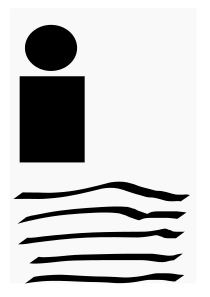

Curriculum Vitae
Nombres: Alan Simon
Apellidos: Manuitt Briceño
Fecha de Nacimiento: 09/09/1993
Lugar de Nacimiento: Caracas,Venezuela
Pagina Principal
Educacion
Experiencia

Experiencia Laboral
Estuve 1 año como Asistente la Universidad Nueva Esparta y al siguiente año me dieron una promocion de cargo y por 1 año fui Coordinador de Sistemas de la Universidad.
Idiomas
- Ingles Avanzado
- Español
- Entendimiento de Portugues y Frances